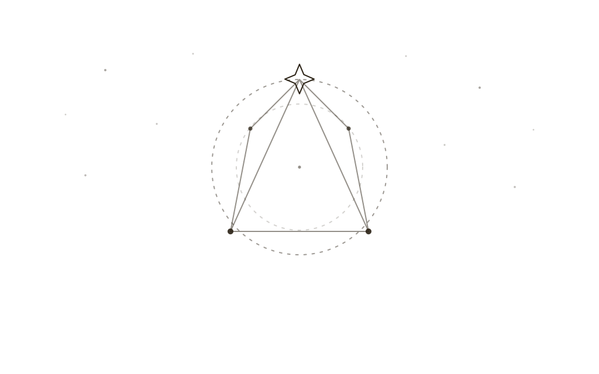

World Health·1 problem found·404
Broken link: this page was never written.
Something pointed here, and there is nothing here. In Otto, World Health would list it, tell you what was doing the pointing, and offer to repair it. On a website the best I can offer is the way back.
←If it ought to exist, tell me and I’ll write it.